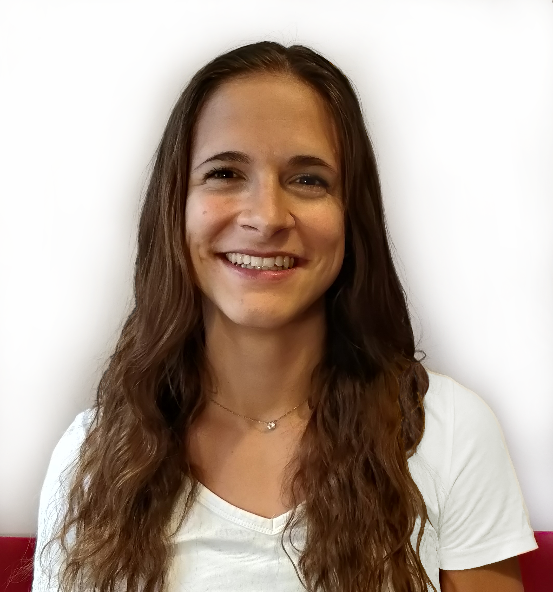

Anna Becchi
Postdoctoral Fellow · Formal Verification and Security Lab
Università della Svizzera italiana (USI), Lugano
About
I work on program verification with Constrained Horn Clauses (CHCs) in the Formal Verification and Security Lab led by Prof. Natasha Sharygina: my focus is certified Horn solving, model-based projection, and improving the convergence of CHC solving algorithms such as Spacer (PDR) and Transition Power Abstraction.
I received my PhD in Computer Science, with distinction, from FBK and the University of Trento in 2025, advised by Alessandro Cimatti. My thesis (slides) develops abstraction techniques for the reverse engineering of timed and hybrid systems, applied to validating the migration of railway interlockings from relay-based to software-based systems.
News
- Jan 2027 Artifact Evaluation Co-Chair of VMCAI 2027, Mexico City, co-located with POPL.
- Oct 2026 Program Committee member of NSAD 2026 at SPLASH/ISSTA, Oakland.
- Jul 2026 My paper PyCHC: a Framework for Certified Horn Solving and CHC-based Design was accepted at CAV’26.
- Dec 2025 My paper Syntactically Convex Model-Based Projection for Linear Real Arithmetic was accepted at TACAS’26.
Publications
Also on dblp ↗
2026
- PyCHC: a Framework for Certified Horn Solving and CHC-based Design
- Syntactically Convex Model-Based Projection for Linear Real Arithmetic
2024
2023
2022
2020
Software
-
Open-source tool for certified Horn solving and CHC-based design.
-
Solver for Constrained Horn Clauses based on the OpenSMT solver.
-
Open-source personal project experimenting with bidirectional model-based projection.
-
NORMA Contributor 2020–2025
Graphical modelling and analysis of relay-based railway interlocking systems. I developed the SMT-based optimizations and the automated property extraction.
-
LRA-BDD Main developer 2020–2022
C++ library combining multi-terminal BDDs and convex polyhedra.
-
C++ library for the convex polyhedra abstract domain.
-
C++ verifier for hybrid systems.
Service
- Artifact Evaluation Co-Chair
- VMCAI ’27 · Mexico City, co-located with POPL
- Program Committee
- NSAD ’26
- Artifact Evaluation Committee
- TACAS ’25–’26 · SAS ’22, ’24 · CAV ’22, ’24, ’26
- Subreviewer
- FASE ’26 · SMT ’26 · DATE ’25 · FM ’24 · CAV ’20, ’22, ’24 · TACAS ’20–’24, ’27 · ATVA ’21, ’22, ’26 · FMCAD ’22, ’26 · SEFM ’20, ’22 · SETTA ’20
- Student Volunteer
- CAV ’24 · FMCAD ’22 · FLoC ’18, ’22
Teaching
Courses
- 2026/27 Computer Aided Verification
- 2026 Theory of Computation
Thesis co-supervision
- 2026/27 Quantifier Elimination for Explainability
- 2026/27 Inside the Golem’s Head